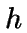

|
A Discrete CalculusPeter Moore
Date: April 2001 Abstract:
This paper introduces the reader to a `Discrete Calculus'
- a reformulation of present-day Calculus which allows the
requirement to limit what is typically denoted by , to be
relaxed. Rather, this `Discrete Calculus' is an environment where
such an is allowed to be a non-zero real.
Throughout this paper, Calculus, as it is traditionally defined, is referred to as `Continuous Calculus', to save confusion. The significance of Discrete Derivatives and Discrete Integrals is discussed. A new notation is developed to be consistent with Continuous Calculus. It is shown that this new Calculus encompasses all that is described by Continuous Calculus, moreover, Continuous Derivatives and Continuous Integrals are shown to be a special case of this new type. In this sense, Discrete Calculus logically extends Continuous Calculus. Discrete Calculus describes a more general Calculus than Continuous Calculus, and so in this paper, standard results from Calculus are adapted to hold generally under the new definitions. A more general and entirely original form of the Euler-Maclaurin sum is derived and studied. Finally, there is an summary of further results, stated without proof. It was intended to have proofs for all propositions and results, but sadly I was unable to complete this in time. However, many results are quite straightforward and do not really require justification.
This
paper is dedicated to Alun Williams, the greatest of teachers, who
inspired this work.
|